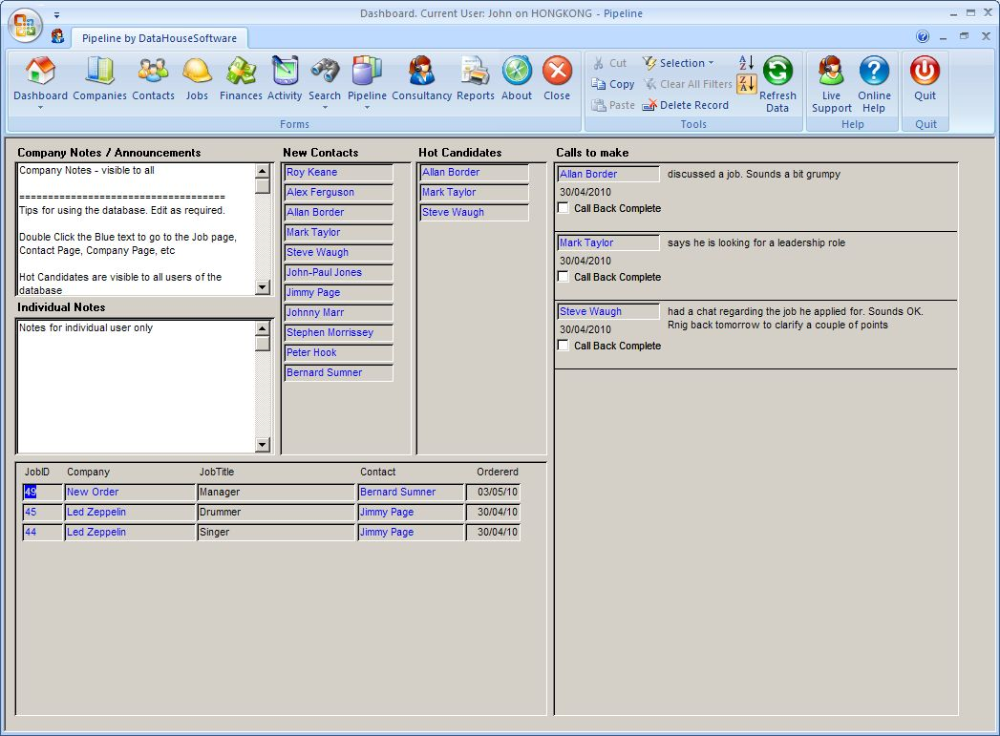

Pipeline
Pipeline is a multi user Recruitment Database designed to run your recruitment consultancy business. All the typical recruitment features are implemented; management of clients contacts, candidates, companies, jobs etc. Where Pipeline really stands out is in the features such as sending emails (via Outlook) with CVs attached directly from the database, emailing interview confirmations to clients and candidates, adding interviews to your Outlook calendar, launching VOIP calls straight from the database and the comprehensive set of reports on activity and income.
The key advantages of using these automation features in Pipeline are
- Increased speed
- Improved accuracy
- Correct settings of dates and other flags for reporting
Pipeline can connect to a data file on your LAN, or to a database on a SQL Server which can be hosted on your server or in our data centre.

I have been searching for recruitment software for many years that is both simple to use and has the detailed search capability of identifying my clients and candidates in a way that we could design ourselves. Pipeline is the most user friendly, intuitive system I have found in the 12 years I have been in recruitment. It has been designed specifically for the use of the recruiter and not HR in mind. We have found that data entry takes seconds to upload contacts and client details and the keyword search capability is as detailed as you want it to be. The add on features such as the pipeline of interviews and the ability to align candidates up to float into clients allows us to track all of the necessary activity.
I can honestly say that the back end service we have received from DataHouseSoftware has been exceptional and anyone thinking of purchasing new recruitment software to help their business grow then this software is the ideal purchase. There are too many products on the market with all the un-necessary bells and whistles that quite frankly are a waste of time. We want our software to capture the relevant information and allow us to do what we do best in the day, which is talk to our client and candidates, not spending all day working out the database. I would be more than happy for anyone to contact me to discuss the benefits of Pipeline for their business.
Dean Dewhirst
Director
Maven Recruitment
We have recently set up a new specialist consulting firm and elected to utilize Pipeline, following a trial period proposed by John Coote. Having previous experience in the recruitment industry along with professional industry experience has enabled John to understand implicitly, the intricate system we would require to maximize our productivity levels. Pipeline's ability to meet our specific needs superseded our expectations, resulting in a system which we believe gives us an edge over our competitors.
We look forward to John’s continued support during our National growth and development in this challenging market.
Joe McDonnell
Recruitment Consultant
I researched quite a few databases. I was used to working with adapt and voyager. I decided to go with Pipeline as it has been designed especially for recruitment agencies so it has all the day to day functions I was used to plus it helps with the financial side including invoicing and wages. It is very user friendly and it was extremely affordable. If I have had any questions John has always been at the other end of the phone to help.
Heidi Crawford
Director, Crawford Recruitment
After an Australia wide search, for a recruitment database, we decided to purchase Pipeline which we determined would fulfil our business requirements in a cost effective manner. The service we have received from John Coote at Data House Software is second to none. John was able to install the system remotely in the first instance and has continually offered this service for installation of updates. John is easily contacted and offers technical assistance promptly and efficiently. The database itself is user friendly and has been a valuable asset to the recruitment side of our business.
Carmel Murphy
Technical Services, Unidel Group
The Directors of CORE Search & Select Pty Ltd, Liz Ball and Louise Harrison have a combined thirty-four years experience in the recruitment industry and admit they have never worked with a database that ticks all the boxes, until Pipeline was introduced to them several months ago. Liz say’s “Having used a number of recruitment database’s over the years, I have found Pipeline to be excellent, it is totally practical, user friendly and is a no-nonsense database, which allows me to do my job more efficiently. It is straightforward and simple and now an integral tool to our business. Core Search & Select is a specialist recruiter, we work closely with a specific network of professionals, Pipeline offers the ability to build and maintain these contacts seamlessly which is essential to our success. The after sales and support that we have received from DataHouseSoftware has been excellent and efficient.”
“DataHouseSoftware guided us throughout the whole process, initially setting up the system, giving one to one training to ensure we maximised pipeline’s ability and what it could offer our business. What was going to be a lengthy and pricey process with other databases we were looking at, Pipeline proved to be effortless in its application and very cost effective. The system was up and running within 24 hours thanks to John Coote’s and the DataHouseSoftware team,” say’s Louise.
Without doubt, we would highly recommend Pipeline and Datahouse Software to any business.
Liz Ball & Louise Harrison
Directors
Core Search and Select
Custom Database
Talk to us about developing a database application to suit your business